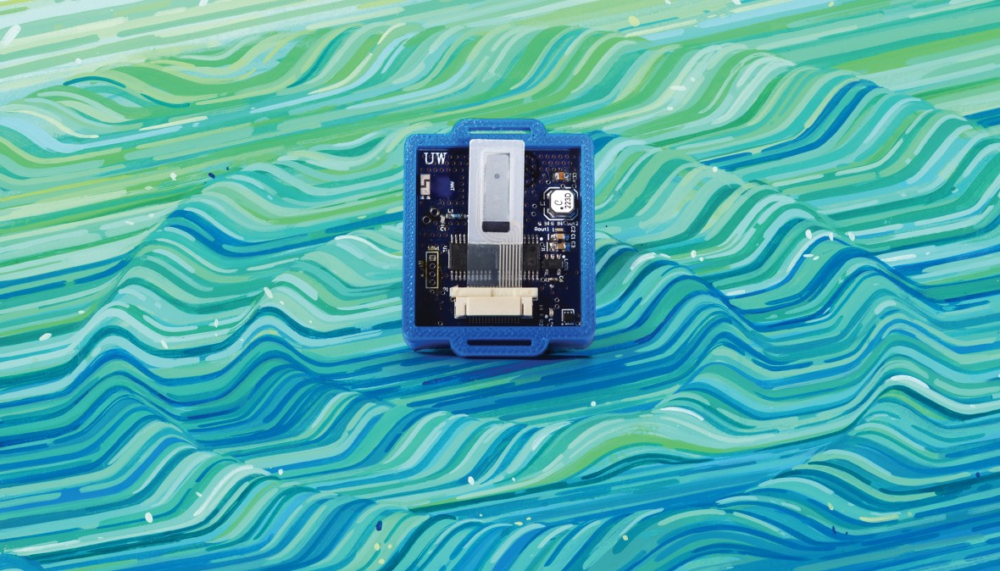

Power from the Air

Even the smallest Internet-connected devices typically need a battery or power cord. Not for much longer. Technology that lets gadgets work and communicate using only energy harvested from nearby TV, radio, cell-phone, or Wi-Fi signals is headed toward commercialization. The University of Washington researchers who developed the technique have demonstrated Internet-connected temperature and motion sensors, and even a camera, powered that way.
Transferring power wirelessly is not a new trick. But getting a device without a conventional power source to communicate is harder, because generating radio signals is very power-intensive and the airwaves harvested from radio, TV, and other telecommunication technologies hold little energy.
Weak radio signals can indeed provide all an Internet gadget needs, using a principle called backscattering. Instead of generating original signals, one of their devices selectively reflects incoming radio waves to construct a new signal. A gadget using the technique absorbs some energy from the signal it is modifying to power its own circuits. RFID chips for the contactless smart cards used in mass transit also rely on backscattering, but they require specialized reader devices and can communicate only within a few inches because the reflected signals are weak and the reader itself presents interference.
One version of the University of Washington technology, dubbed passive Wi-Fi, is being commercialized through a spin-off company, Jeeva Wireless. It lets battery-free gadgets connect with conventional devices such as computers and smartphones by backscattering Wi-Fi signals. Doing that requires altering the software of a Wi-Fi access point to generate an extra signal for passive Wi-Fi devices to use, very slightly increasing its power consumption.
Passive Wi-Fi consumes just 1/10,000th as much power as existing Wi-Fi chipsets. It uses a thousandth as much power as the Bluetooth LE and ZigBee communications standards used by some small connected devices and has a longer range. A device using passive Wi-Fi to communicate—for example, a security camera—could power its other circuits using energy harvested from the Wi-Fi signals it is backscattering, or by feeding on other signals such as TV and radio broadcasts.
The researchers believe that tiny passive Wi-Fi devices could be extremely cheap to make, perhaps less than a dollar. In tomorrow’s smart home, security cameras, temperature sensors, and smoke alarms should never need to have their batteries changed.
John
9:438 PM on November 24, 2016
I don't believe in astrology but still your writing style is really great!